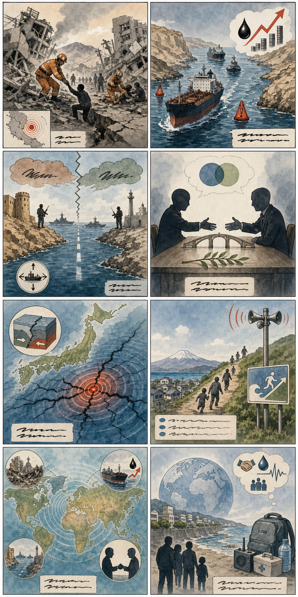
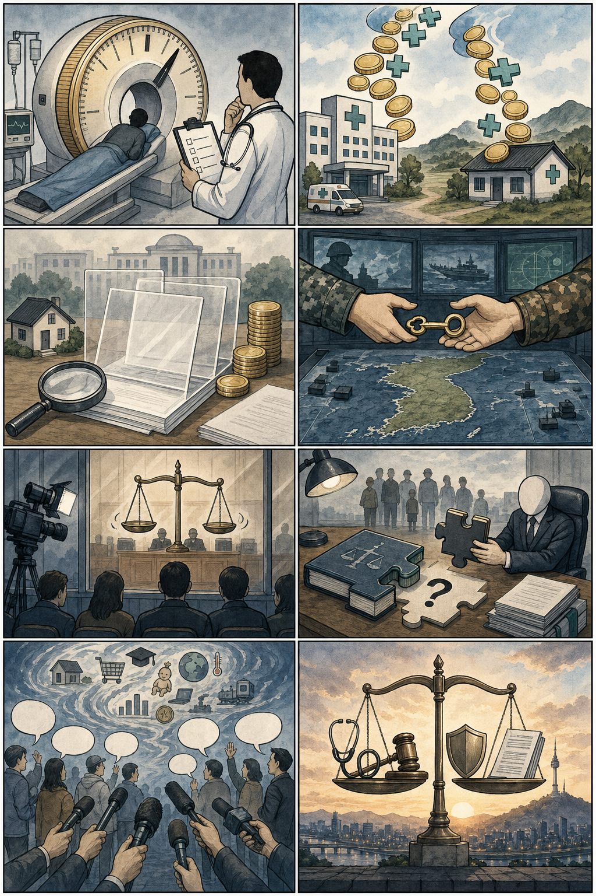

1
베네수엘라 강진, 대규모 구조·복구 대응 본격화
내용요약 강진 피해가 여러 도시로 확산되며 사망·실종자 수색과 국제 지원 논의가 이어지고 있습니다. 지진 양상이 과거 튀르키예·아이티 대지진과 유사하다는 분석도 나왔습니다.
예상여파 구조 장비·의료·식수 지원이 핵심입니다. 피해 규모가 커질 경우 국제기구와 주변국 지원이 더 확대될 수 있습니다.
기사보기미국증시 · 세계뉴스 · 국내뉴스를 하나의 HTML 보고서로 정리했습니다.
미국 주요 지수는 혼조권에서 마감했습니다. Nasdaq은 약세, Dow는 소폭 상승했고, 중동 리스크로 유가·해운 변동성이 다시 체크 포인트가 됐습니다.
투자권유 아님 / 참고용 정보입니다.
가장 최근 완료된 한국 정규장 기준입니다.
| 종목 | 기준일 | 종가 비교 | 등락률 | 출처 |
|---|---|---|---|---|
| SK하이닉스 | 2026.06.25 정규장 전일: 2026.06.24 | 2,580,000원 → 2,917,000원 | +13.06% 상승 | 기사보기 |
| 삼성전자 | 2026.06.25 정규장 전일: 2026.06.24 | 340,500원 → 358,500원 | +5.29% 상승 | 기사보기 |
| 삼성바이오로직스 | 2026.06.25 정규장 전일: 2026.06.24 | 1,385,000원 → 1,386,000원 | +0.07% 상승 | 기사보기 |
출처 확인: 네이버페이 증권 일별시세. 재확인 시각: 2026-06-26 09:58:47 KST. 오전 보고서 기준 거래일은 장 시작 전 가장 최근 완료 정규장인 2026-06-25입니다.
| 종목 | 테마 | 연결 이유 | 체크포인트 |
|---|---|---|---|
| SK하이닉스 000660.KS | AI 메모리/HBM | 미국 AI·메모리 뉴스가 이어질 때 국내 HBM 대표주로 연결됩니다. | 외국인 수급, HBM 가격, Micron/엔비디아 뉴스 |
| 삼성전자 005930.KS | 대형 반도체/메모리 | 메모리 업황 회복과 대형주 수급의 대표 프록시입니다. | DRAM·NAND 가격, 고객사 인증, 기관 수급 |
| 흥구석유 024060.KQ | 호르무즈/국제유가 | 호르무즈 긴장과 유가 반등 뉴스가 국내 에너지 테마로 이어질 수 있습니다. | WTI·브렌트, 중동 헤드라인, 테마 과열 여부 |
내용요약 강진 피해가 여러 도시로 확산되며 사망·실종자 수색과 국제 지원 논의가 이어지고 있습니다. 지진 양상이 과거 튀르키예·아이티 대지진과 유사하다는 분석도 나왔습니다.
예상여파 구조 장비·의료·식수 지원이 핵심입니다. 피해 규모가 커질 경우 국제기구와 주변국 지원이 더 확대될 수 있습니다.
기사보기내용요약 이란이 호르무즈 해협 통행료 구상을 언급하면서 미국·걸프 국가들과의 항행 자유 논쟁이 다시 커졌습니다. 관련 보도에서는 연간 거액의 수입 기대도 거론됐습니다.
예상여파 원유 수송로 불안은 유가와 해운·보험료에 즉각 영향을 줄 수 있습니다. 실제 시행 여부보다 발언 수위와 실무회담 결과가 관건입니다.
기사보기내용요약 호르무즈 해역을 지나던 화물선 피격 신고 이후 철수 작전이 일시 중단됐고, 이란은 지정 항로 이탈 시 안전을 보장할 수 없다고 밝혔습니다.
예상여파 중동 지정학 리스크가 유가와 해운주 변동성을 키울 수 있습니다. 단기적으로는 선박 보험료와 원유 공급 우려가 체크 포인트입니다.
기사보기내용요약 오만이 호르무즈 통행료 부과 가능성에 선을 그었지만, 이란 측은 이를 인정할 수 없다는 입장을 내며 긴장이 이어졌습니다.
예상여파 같은 사안을 두고 관련국 설명이 엇갈리는 만큼 원유·환율 시장은 헤드라인에 민감하게 반응할 수 있습니다.
기사보기내용요약 일본 혼슈 북부 해역에서 규모 7.2 지진이 발생해 일부 교통 차질과 주민 불안이 커졌고, 당국은 후속 지진 가능성을 언급했습니다.
예상여파 환태평양 지진대의 연쇄 지진 우려가 커졌습니다. 일본 교통·물류와 방재 대응 상황을 계속 확인해야 합니다.
기사보기
내용요약 정부와 여권 내에서 검찰 보완수사권 폐지 방향을 두고 입장 정리가 이어지고, 야권·법조계 반응까지 맞물리며 논쟁이 커지고 있습니다.
예상여파 수사·기소 분리의 구체 설계가 핵심입니다. 실제 법안 문구와 경찰·검찰 보완 장치가 향후 쟁점입니다.
기사보기내용요약 미국 국무부 고위 당국자가 한국 정부의 전시작전통제권 전환 의지를 알고 있으며 조건 충족이 빨라지도록 집중하겠다고 밝혔습니다.
예상여파 한미 안보 협의와 국방 역량 평가가 다시 주목받을 수 있습니다. 방산·안보 정책 뉴스도 함께 볼 필요가 있습니다.
기사보기내용요약 김건희 씨 관련 사건 1심 선고를 앞두고 법원이 생중계를 허용했다는 보도가 나왔습니다. 정치·사법 이슈의 공개성과 공정성 논쟁이 이어집니다.
예상여파 선고 결과뿐 아니라 재판 공개 범위, 특검·검찰 후속 대응이 정치권 쟁점으로 확산될 수 있습니다.
기사보기내용요약 권익위원장, 해수부 장관 등 고위공직자 재산 신고 내용이 공개됐고, 일부 기관장 재산 규모가 보도되며 투명성 이슈가 부각됐습니다.
예상여파 공직자 이해충돌·재산 형성 과정 검증이 이어질 수 있습니다. 국회·인사 검증 이슈와 연결될 가능성이 있습니다.
기사보기내용요약 인사청문회에서 대북 인식, 부동산 문제 등을 둘러싸고 여야가 충돌했습니다. 후보자는 일부 표현과 다주택 문제에 대해 사과했습니다.
예상여파 청문 보고서 채택 여부와 추가 자료 요구가 관건입니다. 향후 국정 운영 초반 인사 리스크로 이어질 수 있습니다.
기사보기